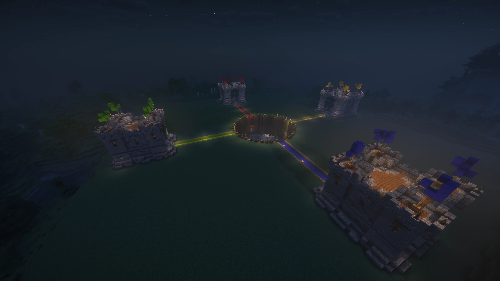
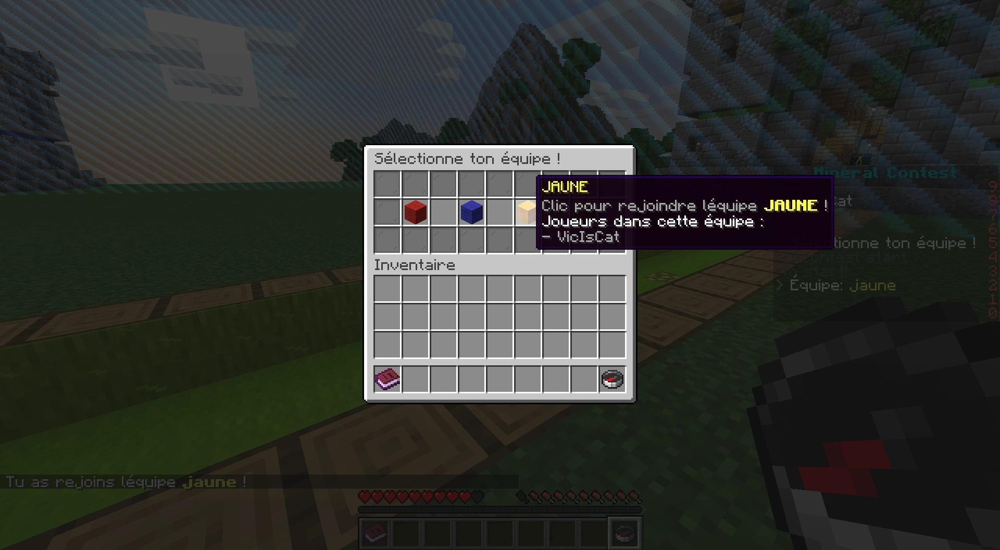
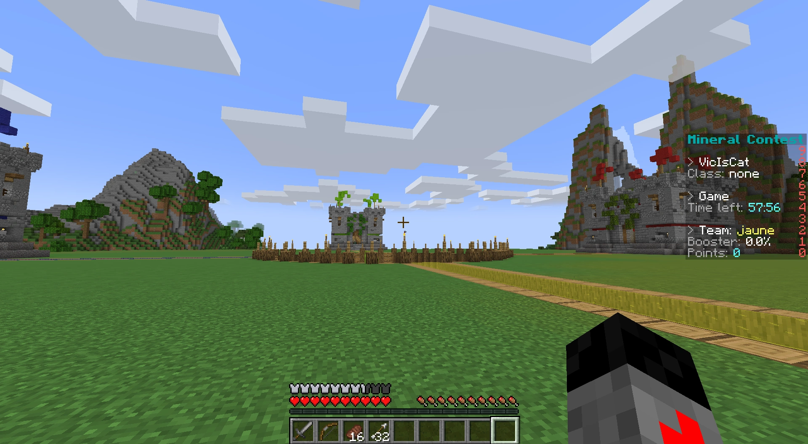
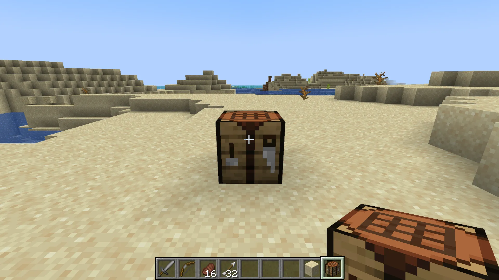
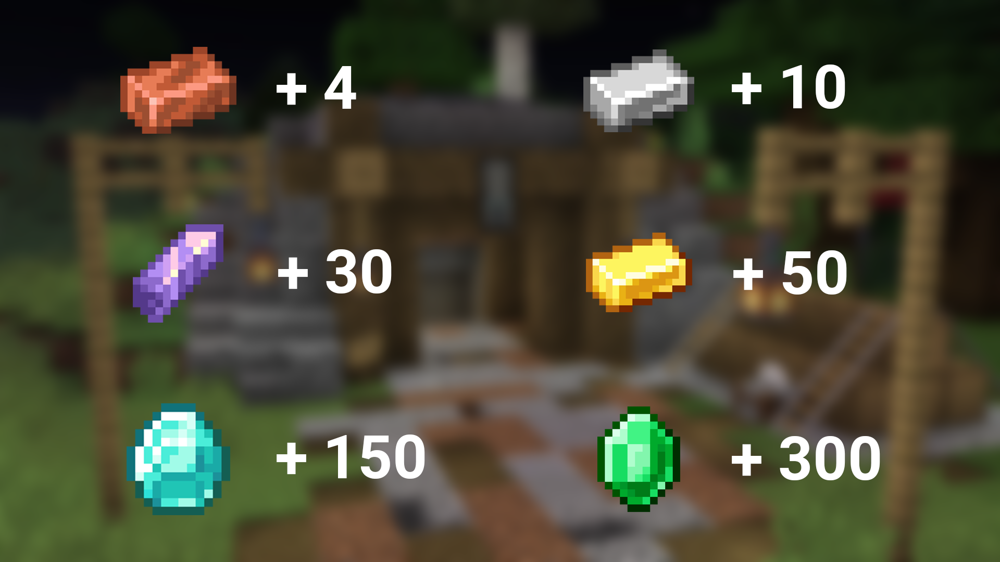
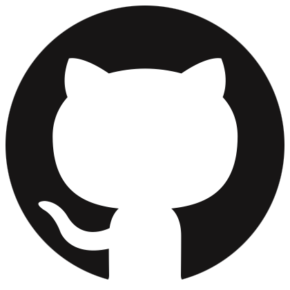

Le meilleur mode de jeu Minecraft multijoueur par équipes et nous sommes parfaitement objectifs !
Le Mineral Contest se joue avec 4 équipes. Pour maximiser le taux de fun nous vous conseillons de jouer avec 4 joueurs dans chaque équipe. Cependant, il n'y a pas de minimum requis, vous pouvez très bien jouer en 1 contre 1, mais dans ce cas là, le taux de fun sera vraiment très bas. Pour débuter la partie, faites un clic droit sur la boussole puis selectionnez la couleur de votre choix.

A partir du lancement de la partie, vous avez 45sec pour choisir une classe parmi :
Si vous tardez à en choisir une, l'aléatoire quantique le fera pour vous.
La partie vient de se commencer et vous devriez déjà être en possession d'une armure en fer, d'une épée en pierre, d'un arc (+32 flèches) ainsi que de 16 steaks. Si jamais vous étiez en train d'éffectuer un trou en forme de vous, ne vous inquiétez pas le stuff de base est le même que lorsque l'on respawn.


Armez-vous de votre plus beau steak et décapitez un arbre, construisez une table de craft (établi), fabriquez une superbe pioche puis minez les plus beaux minerais possibles.
Pour remporter la partie, l'objectif est simple : miner les trucs qui brillent le plus, les faire cuire, et les amener dans le coffre de l'Ender à votre base. Plus ça brille, plus ça rapporte de points. À noter que la redstone enlève 1 point à toutes les autres équipes.

Vous pouvez télécharger le Mineral Contest en cliquant sur le bouton ci-dessous. Vous serez redirigé vers la page de téléchargement de la dernière version du jeu.

Ce mode de jeu à été inventé par Squeezie et a été repris par VicIsCat pour le recréer à partir de zéro. Si vous avec une suggestion, une idée, ou que vous avez trouvé un bug, envoyez un message Discord à vicisacat. Le site a été développé par ashokas.
Aucun code n'a été volé (si ce n'est à ChatGPT) et le terme "Mineral Contest" n'est pas déposé. J'ai pas tout compris à ce qu'il y avait écrit sur l'internet satellisé mais normalement c'est pas illégal de voler l'idée de quelqu'un d'autre. Notre code est open source.